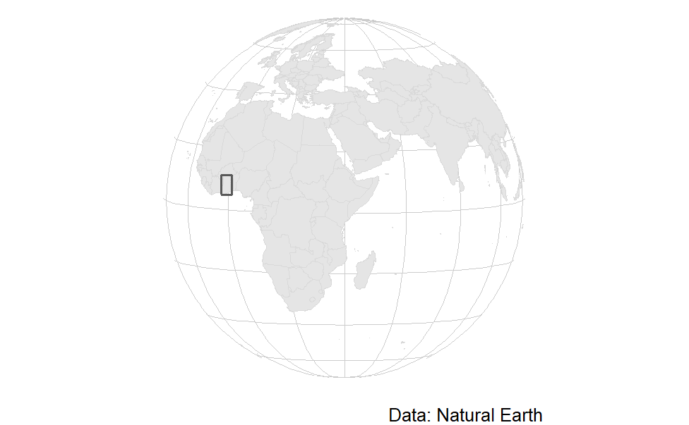
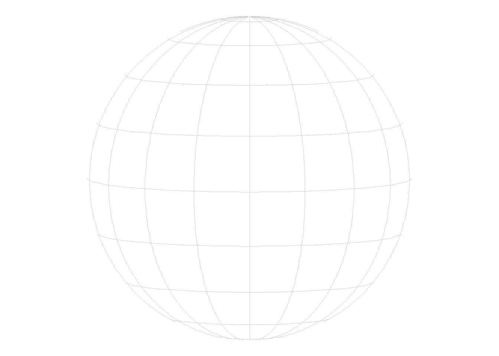
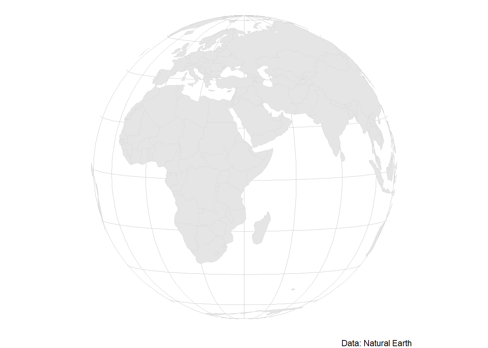
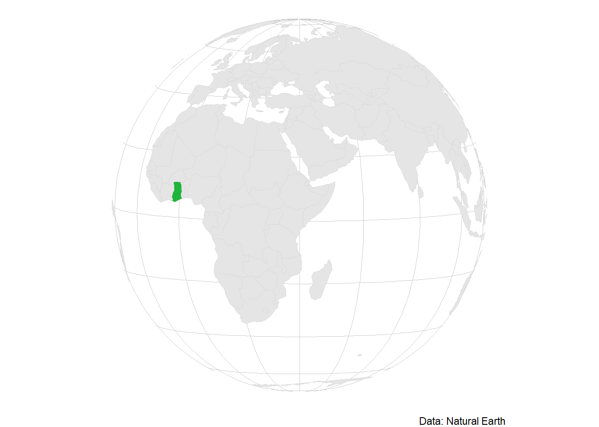
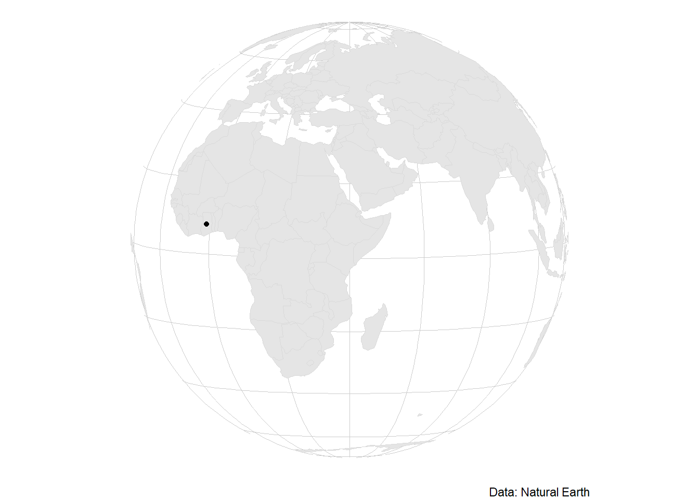
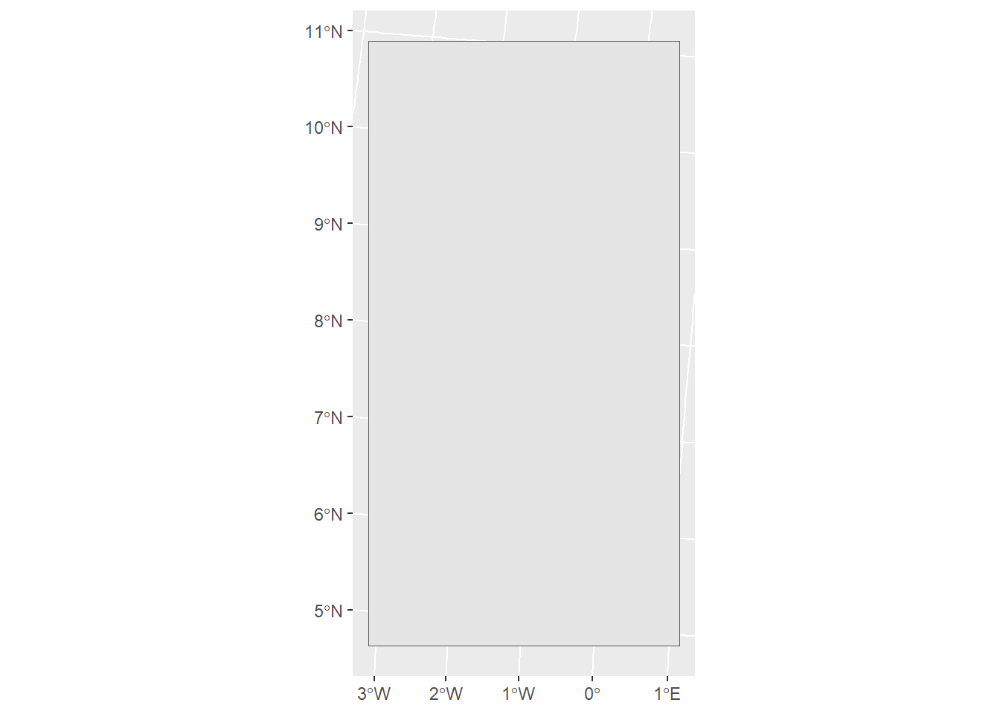

library(sf)
library(dplyr)
library(ggplot2)
library(countrycode)
library(rnaturalearth)
library(mapview)Sometimes I visualize data on a country that not everyone is familiar with. In this case, a locator map can be helpful: It shows where in the world my country of interest is. Here, I’ll show you how to create such a locator map for Ghana.

Preparation
First, I load all necessary libraries.
Then, I set the coordinate reference system (CRS) for my map. This is a bit obscure, not a standard ESRI/EPSG code. Instead, we want to show just the part of the world where our country lies.
If your country is not in Africa, you might have to adjust the lon parameter.
Tip
ggplot2 does not handle all CRS well. You might have to try around a bit before you find one that shows the area you want to show and where the graticules also show properly.
locator_crs <- "+proj=ortho +lat_0=5 +lon_0=+40"I then load the map data: data for the whole world. It’s saved in a format called sf, which stands for spatial feature. We can treat it just like any other data frame, but each row has a column called “geometry”, from which the coordinates of the row can be plotted – in this case, a country’s outline.
world <- ne_countries(scale = "medium", returnclass = "sf")
world <- ne_countries(scale = "small",
returnclass = "sf") |>
st_cast('MULTILINESTRING') |>
st_cast('LINESTRING', do_split = TRUE) |>
mutate(npts = npts(geometry, by_feature = TRUE)) |>
st_cast('POLYGON')Plotting
Now, we’re ready to plot our map!
Plotting the graticule
Let’s start out with just plotting our graticule. That’s the net of lines that make up the latitudes and longitudes, and that we’re used to seeing from a gobe. For that, we’ll need:
- a graticule
- the projection
- a
theme_void()
Tip
Technically, you can also simply use the ggplot gridlines. However, they’re a bit buggy, so I’d recommend using these explicit gridlines. That’s why we’re also using the theme_void(): so we don’t get those gridlines as well.
We can use the function sf::st_graticule to create this graticule on the fly.
globe <- ggplot() +
# define our graticules
geom_sf(data = st_graticule(n_discr = 1),
col = "grey80", fill = "white", linewidth = .25) +
# define the CRS and theme
coord_sf(crs = locator_crs) +
theme_void()
globe
And ta-da, that’s our globe!
Plotting the world
Let’s continue with plotting the world on top, so we have some context for locating. We’ll plot the world in a grey tone, since we only need it for context, but don’t want the map reader to be overwhelmed.
We’ll need:
- a world
sfdataset - our CRS (again)
Since we’re using the Natural Earth dataset, we’ll give credit to them through the caption.
Tip
We need to define the CRS again because we’re calling a geometry (geom_sf()) after we last defined the CRS.
locator_map <- globe +
geom_sf(data = world,
col = "grey85") +
# define the CRS
coord_sf(crs = locator_crs) +
# give credit
labs(caption = "Data: Natural Earth")
locator_map
Highlighting our country
Now let’s get to the interesting part: highlighting!
Highlighting by color
With countries that are large enough, simply highlighting by color works well. We give the country any other color than grey, and it’s going to pop.
So what do we need?
- our country’s geometry
- a highlighting color (I’m choosing white)
- our CRS (again)
We’re starting with our last map, and add just our country on top.
locator_map +
# define our country
geom_sf(data = world |> filter(sovereignt == "Ghana"),
fill = "#1EB53A",
col = "grey85") +
# make sure we have the correct CRS
coord_sf(crs = locator_crs) 
Highlighting with a dot
Sometimes, we don’t want to highlight a whole country, but instead just a smaller spot – maybe
- a city,
- a mountain or
- a tree that we find interesting.
In this case, it makes sense to use a point geometry for highlighting. So we’ll need
- a point geometry
- our CRS (again)
# make Ghana a point geometry
ghana_dot <- world |>
filter(sovereignt == "Ghana") |>
st_centroid()
locator_map +
geom_sf(data = ghana_dot) +
# make sure we have the correct CRS
coord_sf(crs = locator_crs) 
Tip
Here, we don’t have to define a color – having one point already pops.
Highlighting with a bounding box
Sometimes, we want to highlight a larger area that wouldn’t show well on a globe: maybe an island group or a small country. In this case, we can also highlight using a bounding box of our original geometry.
So let’s start by creating our bounding box for the geometry. Importantly, it needs to be a polygon so we can plot it.
Tip
Make sure you transform your polygon’s CRS to the one you’ll be using for the locator map. Otherwise, the bounding box won’t be rectangular.
ghana_bbox <- world |>
filter(sovereignt == "Ghana") |>
st_transform(locator_crs) |>
st_bbox() |>
st_as_sfc()
ggplot() +
geom_sf(data = ghana_bbox) +
coord_sf(crs = locator_crs)
If we plot it, we can see it’s just a rectangle. And it’s got 90° angles when using our locator map CRS. Perfect, so let’s plot it on top of our raw locator map! Let’s make sure that we buffer the bounding box a bit – that way, we can see the borders of our country. Setting fill to NA makes sure that we can see what’s below the bounding box.
locator_map +
geom_sf(data = ghana_bbox |> st_buffer(5e4),
fill = NA,
lwd = .5) +
# make sure we have the correct CRS
coord_sf(crs = locator_crs) And there we go: three different ways of creating a locator map. If you want to combine it with your more detailed map into a single plot, I’d recommend the package patchwork for this.
Just the code, please
If you just want to grab the code, here you go.
ggplot() +
# define our graticules
geom_sf(data = st_graticule(n_discr = 1),
col = "grey80", fill = "white", linewidth = .25) +
# world
geom_sf(data = world,
col = "grey85") +
# our country
geom_sf(data = world |> filter(sovereignt == "Ghana"),
fill = "#1EB53A",
col = "grey85") +
# give credit
labs(caption = "Data: Natural Earth") +
# define the CRS and theme
coord_sf(crs = locator_crs) +
theme_void() 
ghana_dot <- world |>
filter(sovereignt == "Ghana") |>
st_centroid()
ggplot() +
# define our graticules
geom_sf(data = st_graticule(n_discr = 1),
col = "grey80", fill = "white", linewidth = .25) +
# world
geom_sf(data = world,
col = "grey85") +
# our country
geom_sf(data = ghana_dot) +
# give credit
labs(caption = "Data: Natural Earth") +
# define the CRS and theme
coord_sf(crs = locator_crs) +
theme_void() ghana_bbox <- world |>
filter(sovereignt == "Ghana") |>
st_transform(locator_crs) |>
st_bbox() |>
st_as_sfc()
ggplot() +
# define our graticules
geom_sf(data = st_graticule(n_discr = 1),
col = "grey80", fill = "white", linewidth = .25) +
# world
geom_sf(data = world,
col = "grey85") +
# our country
geom_sf(data = ghana_bbox,
fill = NA,
lwd = .5) +
# give credit
labs(caption = "Data: Natural Earth") +
# define the CRS and theme
coord_sf(crs = locator_crs) +
theme_void() Citation
BibTeX citation:
@online{zeller2025,
author = {Zeller, Sarah},
title = {Creating a Locator Map with `Ggplot2`},
date = {2025-02-02},
url = {https://sarahzeller.github.io/blog/posts/locator-map/},
langid = {en}
}
For attribution, please cite this work as:
Zeller, Sarah. 2025. “Creating a Locator Map with
`Ggplot2`.” February 2, 2025. https://sarahzeller.github.io/blog/posts/locator-map/.